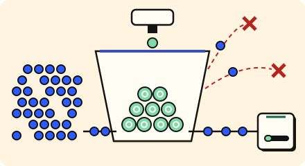

Stay up · 3 minutes
Saying "slow down" politely
A limit per client stops one noisy caller or a flood from taking everyone down.
Open this lesson
A bouncer, not a wall
One buggy script or an attacker can send more requests than the whole crowd. A rate limiter counts requests per client and answers the extra ones with a quick "too many requests" (HTTP 429). Everyone else is served as usual.
How it counts
Each request spends one token. Refill allows a short burst while putting a bound on a sustained flood.
Try the idea
A flood of junk traffic is hitting the servers. Add a rate limiter in front.
Key numbers
- Limiter check
- ≈ 0.5 ms. in-memory counters, approx.
- Typical API limit
- ≈ 1 to 100 requests a second per key. free public tiers are often about 5,000 an hour (1.4 a second); paid tiers far more, approx.
- A modest flood
- ≈ 50 times normal. seen in real attacks, approx.
Check your reasoning
Think through these questions before opening the lesson. In the game you can test the idea and compare your reasoning.
- What does a rate limiter send back to an over-limit client?
- If the limiter fails, "fail open" means:
- Why limit per client, not just in total?
The key point
Limit each caller so one flood cannot become everyone's outage.
Practise this idea
- Medium
Rate limiter for a public API
Developers call your public API from scripts and apps. A few misbehaving or malicious clients can crowd out everyone else. Build limits that are fair, fast and cheap, and that survive a retry storm.
- Medium
Login and single sign-on
Employees and customers sign in to many apps through one account. Most of the day is quiet, then 9 am arrives and everyone signs in at once. Attackers also hammer the login with stolen passwords. Let real people in quickly and keep the rest out.
- Hard
Crypto exchange
People trade coins, check prices and withdraw funds around the clock from every continent. A sudden price crash makes everyone log in and trade at once, attackers flood you hoping to knock the site over, and a leaked key could empty a wallet. Balances must never be wrong.
- Hard
Vaccine sign-up surge
A county opens 80,000 vaccine appointments at 8 am. Within seconds, thousands of people reload and bots try to grab slots. The site must stay up, never sell the same slot twice, and be fair to people on a phone with a poor signal.